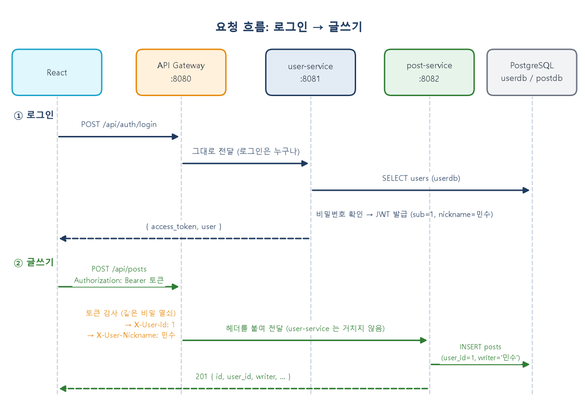
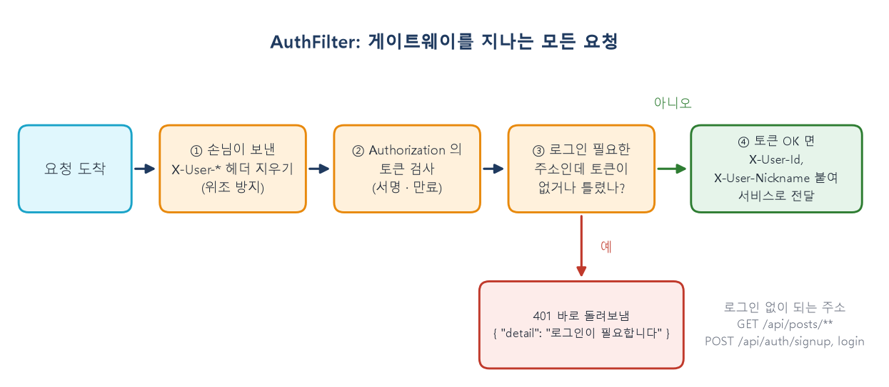

6장. api-gateway - 라우팅과 인증을 정문에서
학습 목표
- Spring Cloud Gateway 로 주소에 따라 다른 서비스로 전달(라우팅) 한다.
GlobalFilter로 모든 요청의 토큰을 한 곳에서 검사하고, 결과를 헤더로 넘긴다.- 헤더 위조를 막는 방법, CORS 를 정문에서 처리하는 이유, 서비스 장애 때의 응답을 안다.
6-1. 게이트웨이가 하는 일

그림의 ② 글쓰기를 보자. 게이트웨이는 토큰을 검사한 뒤 user-service 를 거치지 않고 바로 post-service 로 보낸다. 토큰 서명만 확인하면 누구인지 알 수 있기 때문이다.
| 일 | 어디에 | 코드 양 |
|---|---|---|
① 라우팅 (/api/auth/** → 8081, /api/posts/** → 8082) |
application.yml |
설정 몇 줄 |
| ② CORS (React 5173 허락) | application.yml |
설정 몇 줄 |
③ 토큰 검사 → X-User-Id, X-User-Nickname 헤더 |
AuthFilter.java, JwtChecker.java |
파일 2개 |
| ④ 서비스가 꺼졌을 때 503 JSON | GatewayErrorHandler.java |
파일 1개 |
api-gateway/src/main/java/com/example/gateway
├─ GatewayApplication.java 시작점 (8080)
├─ AuthFilter.java 모든 요청의 토큰 검사
├─ JwtChecker.java 토큰 서명·만료 확인
└─ GatewayErrorHandler.java 오류 → {"detail": ...}
6-2. 라이브러리
// build.gradle (api-gateway) - 게이트웨이에 필요한 라이브러리
//
// spring-cloud-starter-gateway-server-webflux : Spring Cloud Gateway
// 들어온 요청을 주소 규칙(routes)에 따라 다른 서버로 "전달" 해 주는 프로그램.
// application.yml 에 규칙만 적으면 전달 코드는 직접 짤 필요가 없다.
// jjwt : 로그인 토큰이 진짜인지 "검사" 한다 (토큰을 만드는 쪽은 user-service)
//
// DB 관련 라이브러리가 없다 → 게이트웨이는 데이터를 저장하지 않는다.
// 웹 MVC 대신 WebFlux 기반이라 코드에 Mono 라는 낯선 이름이 조금 나온다 (AuthFilter 주석 참고).
dependencies {
implementation 'org.springframework.cloud:spring-cloud-starter-gateway-server-webflux'
implementation 'io.jsonwebtoken:jjwt-api:0.13.0'
runtimeOnly 'io.jsonwebtoken:jjwt-impl:0.13.0'
runtimeOnly 'io.jsonwebtoken:jjwt-jackson:0.13.0'
}
// Spring Cloud 라이브러리 묶음의 버전 (Spring Boot 4.0 ~ 4.1 과 짝이 맞는 버전)
// 위에서 gateway 라이브러리 버전을 적지 않아도 이 묶음이 알맞은 버전을 골라 준다.
dependencyManagement {
imports {
mavenBom 'org.springframework.cloud:spring-cloud-dependencies:2025.1.5'
}
}
Spring Cloud 는 Spring Boot 위에서 MSA 를 만들 때 쓰는 도구 모음이다. Gateway 말고도 서비스 찾기(Eureka), 설정 서버(Config) 등이 있다. 버전은 Spring Boot 버전과 짝을 맞춰야 하므로 mavenBom 으로 묶음 버전(2025.1.5)을 지정한다.
WebFlux 라는 말이 보인다. 게이트웨이는 아주 많은 요청을 동시에 넘겨줘야 하므로, 지금까지 쓴 Web MVC 대신 WebFlux(적은 스레드로 많은 요청을 처리하는 방식)로 만들어져 있다. 그래서 코드에
Mono같은 낯선 이름이 조금 나온다. 이 교안에서는 "나중에 끝나는 작업을 돌려준다" 정도로만 이해해도 충분하다.
6-3. application.yml - 라우팅과 CORS
# application.yml - API 게이트웨이 설정
#
# [MSA 개념] API 게이트웨이 = 모든 요청이 들어오는 "정문"
# React 는 서비스가 몇 개인지, 각각 몇 번 포트인지 몰라도 된다. 항상 8080 하나로만 요청한다.
# 게이트웨이가 주소를 보고 알맞은 서비스로 전달해 준다 (라우팅).
#
# React ── http://localhost:8080/api/auth/login ──▶ 게이트웨이 ──▶ user-service (8081)
# React ── http://localhost:8080/api/posts ──▶ 게이트웨이 ──▶ post-service (8082)
server:
port: 8080 # 모놀리식 판의 서버와 같은 포트 → React 의 API_URL 을 바꿀 필요가 없다
spring:
application:
name: api-gateway
cloud:
gateway:
server:
webflux:
# ---- 1. 라우팅 규칙: "이런 주소(predicates)는 저기(uri)로 보내라" ----
routes:
- id: user-service
uri: ${USER_SERVICE_URL:http://localhost:8081}
predicates:
- Path=/api/auth/** # 회원가입 · 로그인 · 내 정보
- id: post-service
uri: ${POST_SERVICE_URL:http://localhost:8082}
predicates:
- Path=/api/posts/** # 게시글 (/api/posts 자체도 포함된다)
# ---- 2. CORS: React 개발 서버(5173)에서 오는 요청 허락 ----
# 브라우저는 정문(게이트웨이)만 보므로 CORS 도 여기 한 곳에서만 설정한다.
# (각 서비스에는 CORS 설정이 없다)
globalcors:
cors-configurations:
'[/api/**]':
allowed-origins:
- http://localhost:5173
- http://127.0.0.1:5173
allowed-methods: [GET, POST, PUT, DELETE]
allowed-headers: "*" # Authorization 헤더(토큰)도 보낼 수 있게
# JWT 설정 - user-service 의 jwt.secret 과 반드시 같은 값이어야 한다
# (user-service 가 이 열쇠로 서명한 토큰을, 게이트웨이가 같은 열쇠로 검사한다)
jwt:
secret: ${JWT_SECRET:dev-only-secret-change-me-0123456789abcdef}
routes 는 "이 주소(predicates)로 온 요청은 저기(uri)로 보내라" 는 규칙 목록이다.
| id | 이런 요청이 오면 (predicates) | 여기로 보낸다 (uri) |
|---|---|---|
| user-service | Path=/api/auth/** |
http://localhost:8081 |
| post-service | Path=/api/posts/** |
http://localhost:8082 |
주소는 바꾸지 않고 그대로 전달한다. 예를 들어 http://localhost:8080/api/posts/3 은 http://localhost:8082/api/posts/3 으로 간다.
[MSA 개념] 서비스 주소는 게이트웨이만 안다.
게시글 서비스를 8082 에서 9000 으로 옮겨도 React 는 고칠 게 없다. 게이트웨이의
uri한 줄만 바꾸면 된다. 서비스가 두 대로 늘어나도 마찬가지다. 바깥(React)과 안쪽(서비스)이 정문을 사이에 두고 떨어져 있다.
globalcors - 브라우저가 보는 서버는 게이트웨이 하나다. 그래서 CORS 도 정문 한 곳에서만 설정한다. 서비스들에는 CORS 설정이 없다. (서비스에도 CORS 를 켜면 응답에 CORS 헤더가 두 번 붙을 수 있고, 그러면 브라우저가 오히려 거부한다)
"CORS 를 게이트웨이에서 하니 서비스는 아무나 부를 수 있나?" CORS 는 브라우저가 지키는 규칙이라 PowerShell 이나 다른 서버의 요청은 막지 못한다. 서비스를 지키는 것은 CORS 가 아니라 "서비스 포트를 바깥에 열지 않는 것"(4장)과 게이트웨이의 토큰 검사다.
6-4. JwtChecker - 같은 열쇠로 검사
package com.example.gateway;
import io.jsonwebtoken.Claims;
import io.jsonwebtoken.JwtException;
import io.jsonwebtoken.Jwts;
import io.jsonwebtoken.security.Keys;
import java.nio.charset.StandardCharsets;
import javax.crypto.SecretKey;
import org.springframework.beans.factory.annotation.Value;
import org.springframework.stereotype.Component;
/**
* JwtChecker - JWT(로그인 토큰) "검사" 전용
*
* user-service 의 JwtProvider 가 만든 토큰을, 같은 비밀 열쇠(jwt.secret)로 검사한다.
* - 서명이 맞는가? (누군가 토큰 내용을 몰래 고쳤다면 서명이 맞지 않는다)
* - 만료되지 않았는가?
* 둘 다 통과하면 토큰 내용(Claims)을 돌려준다.
* claims.getSubject() → "3" (사용자 번호)
* claims.get("nickname", String.class) → "민수" (닉네임)
*
* [MSA 개념] 게이트웨이는 userdb 를 보지 않는다. 서명만 확인하면 토큰을 믿을 수 있기 때문이다.
*/
@Component
public class JwtChecker {
private final SecretKey key;
public JwtChecker(@Value("${jwt.secret}") String secret) {
this.key = Keys.hmacShaKeyFor(secret.getBytes(StandardCharsets.UTF_8));
}
/** 토큰이 올바르면 내용(Claims)을, 위조됐거나 만료됐으면 null 을 돌려준다 */
public Claims check(String token) {
try {
return Jwts.parser().verifyWith(key).build()
.parseSignedClaims(token) // 서명·만료를 검사한다. 문제가 있으면 JwtException
.getPayload();
} catch (JwtException | IllegalArgumentException e) {
return null;
}
}
}
user-service 의 JwtProvider 는 토큰을 만들고, 게이트웨이의 JwtChecker 는 검사한다. 둘이 같은 jwt.secret 을 나눠 가졌으므로, 게이트웨이는 userdb 를 보지 않고도 "user-service 가 발급한 진짜 토큰" 인지 알 수 있다.
6-5. AuthFilter - 모든 요청의 정문 검사

package com.example.gateway;
import io.jsonwebtoken.Claims;
import java.net.URLEncoder;
import java.nio.charset.StandardCharsets;
import org.springframework.cloud.gateway.filter.GatewayFilterChain;
import org.springframework.cloud.gateway.filter.GlobalFilter;
import org.springframework.core.Ordered;
import org.springframework.http.HttpHeaders;
import org.springframework.http.HttpMethod;
import org.springframework.http.HttpStatus;
import org.springframework.http.server.reactive.ServerHttpRequest;
import org.springframework.http.server.reactive.ServerHttpResponse;
import org.springframework.stereotype.Component;
import org.springframework.web.server.ServerWebExchange;
import reactor.core.publisher.Mono;
/**
* AuthFilter - 게이트웨이를 지나가는 "모든" 요청의 로그인 토큰을 검사하는 필터
*
* [MSA 개념] 인증은 정문(게이트웨이)에서 한 번만
* 서비스가 10개라도 토큰 검사 코드는 여기 한 곳에만 있다.
* 검사를 통과한 요청에는 "누가 보냈는지" 를 헤더로 적어서 서비스에 넘긴다.
* X-User-Id : 3
* X-User-Nickname : %EB%AF%BC%EC%88%98 ("민수". 헤더에는 한글을 바로 못 실어서 URL 인코딩)
* 서비스는 이 헤더만 읽으면 된다 (토큰·Spring Security 를 몰라도 된다).
*
* 하는 일 (순서대로)
* 1. 손님(브라우저)이 보낸 X-User-Id, X-User-Nickname 헤더는 지운다.
* → 누군가 "X-User-Id: 1" 을 직접 적어 보내 남인 척하는 것을 막는다. (헤더는 게이트웨이만 붙일 수 있다)
* 2. "Authorization: Bearer <토큰>" 에서 토큰을 꺼내 검사한다.
* 3. 로그인이 필요한 주소인데 올바른 토큰이 없으면 → 401 { "detail": "..." } 로 바로 돌려보낸다.
* 4. 토큰이 올바르면 X-User-Id, X-User-Nickname 헤더를 붙여 서비스로 넘긴다.
*
* 로그인 없이 쓸 수 있는 주소
* GET /api/posts, /api/posts/{id} (글 읽기)
* POST /api/auth/signup, /api/auth/login (가입, 로그인)
* 그 밖 (글쓰기·수정·삭제, /api/auth/me) 은 로그인 필요
*
* 처음 보는 이름 정리 (게이트웨이는 WebFlux 라는 방식으로 동작한다)
* GlobalFilter : 모든 경로(route)에 적용되는 게이트웨이 필터
* ServerWebExchange : 요청(request) + 응답(response) 묶음
* Mono<Void> : "나중에 끝나는 작업" 이라는 뜻. 지금은 "return chain.filter(...)" 또는
* "return 응답쓰기" 둘 중 하나를 돌려준다고만 알면 충분하다.
*/
@Component
public class AuthFilter implements GlobalFilter, Ordered {
private static final String USER_ID = "X-User-Id";
private static final String USER_NICKNAME = "X-User-Nickname";
private final JwtChecker jwtChecker;
public AuthFilter(JwtChecker jwtChecker) {
this.jwtChecker = jwtChecker;
}
@Override
public Mono<Void> filter(ServerWebExchange exchange, GatewayFilterChain chain) {
ServerHttpRequest request = exchange.getRequest();
// 1. 손님이 보낸 X-User-* 헤더 지우기 (위조 방지)
ServerHttpRequest.Builder newRequest = request.mutate()
.headers(headers -> {
headers.remove(USER_ID);
headers.remove(USER_NICKNAME);
});
// 2. 토큰 꺼내서 검사
String authorization = request.getHeaders().getFirst(HttpHeaders.AUTHORIZATION);
boolean hasToken = authorization != null && authorization.startsWith("Bearer ");
Claims claims = hasToken ? jwtChecker.check(authorization.substring(7)) : null; // "Bearer " 뒤의 글자
// 3. 로그인이 필요한데 올바른 토큰이 없다 → 401
if (claims == null && needsLogin(request)) {
String message = hasToken ? "로그인이 만료되었습니다. 다시 로그인하세요" : "로그인이 필요합니다";
return unauthorized(exchange, message);
}
// 4. 토큰이 올바르면 "누가 보냈는지" 헤더로 붙이기
if (claims != null) {
String nickname = claims.get("nickname", String.class);
newRequest.header(USER_ID, claims.getSubject());
newRequest.header(USER_NICKNAME, URLEncoder.encode(nickname, StandardCharsets.UTF_8)); // 민수 → %EB%AF%BC...
}
// 바뀐 요청으로 다음 단계(→ 서비스로 전달)를 진행한다
return chain.filter(exchange.mutate().request(newRequest.build()).build());
}
/** 이 요청은 로그인이 필요한가? */
private boolean needsLogin(ServerHttpRequest request) {
HttpMethod method = request.getMethod();
String path = request.getPath().value(); // 예: /api/posts/5
if (method == HttpMethod.GET && path.startsWith("/api/posts")) {
return false; // 글 읽기는 누구나
}
if (method == HttpMethod.POST && (path.equals("/api/auth/signup") || path.equals("/api/auth/login"))) {
return false; // 가입·로그인은 누구나
}
return true; // 나머지는 로그인 필요
}
/** 401 응답을 { "detail": "..." } JSON 으로 바로 돌려준다 (서비스까지 가지 않는다) */
private Mono<Void> unauthorized(ServerWebExchange exchange, String message) {
ServerHttpResponse response = exchange.getResponse();
response.setStatusCode(HttpStatus.UNAUTHORIZED);
response.getHeaders().set(HttpHeaders.CONTENT_TYPE, "application/json;charset=UTF-8");
byte[] body = ("{\"detail\":\"" + message + "\"}").getBytes(StandardCharsets.UTF_8);
return response.writeWith(Mono.just(response.bufferFactory().wrap(body)));
}
/** 필터 순서. 숫자가 작을수록 먼저 실행된다 → 서비스로 전달하기 전에 반드시 먼저 검사 */
@Override
public int getOrder() {
return -1;
}
}
순서대로 읽어 보자.
- 손님이 보낸 X-User-* 헤더 지우기 - 서비스는 이 헤더를 믿는다(4장). 만약 누군가 브라우저에서
X-User-Id: 1을 직접 적어 보내고 게이트웨이가 그대로 넘긴다면, 아무나 1번 회원 행세를 할 수 있다. 그래서 들어온 헤더는 무조건 지우고, 토큰을 검사한 게이트웨이만 새로 붙인다. - 토큰 검사 -
Authorization: Bearer <토큰>에서 토큰을 꺼내JwtChecker로 검사한다. - 로그인이 필요한데 토큰이 없거나 틀리면 401 -
needsLogin이 주소 규칙을 정한다. 글 읽기(GET/api/posts/**)와 가입·로그인만 누구나 쓸 수 있다. 응답은 서비스까지 가지 않고 게이트웨이가 바로 돌려준다. - 헤더 붙여 전달 - 토큰이 올바르면
X-User-Id,X-User-Nickname을 붙여 서비스로 넘긴다.
[MSA 개념] 인증(Authentication)과 인가(Authorization)를 나눠 맡는다. - 인증 = "누구세요?" → 게이트웨이가 토큰으로 확인 (401) - 인가 = "이 일을 해도 되나요?" → 데이터를 가진 서비스가 판단 (403, 남의 글)
서비스가 100개라도 토큰 검사 코드는 게이트웨이 한 곳에만 있다. 토큰 방식을 바꿀 때도 게이트웨이만 고치면 된다.
6-6. GatewayErrorHandler - 서비스가 꺼졌을 때
package com.example.gateway;
import java.net.ConnectException;
import java.nio.charset.StandardCharsets;
import org.springframework.boot.webflux.error.ErrorWebExceptionHandler;
import org.springframework.core.annotation.Order;
import org.springframework.http.HttpHeaders;
import org.springframework.http.HttpStatus;
import org.springframework.http.server.reactive.ServerHttpResponse;
import org.springframework.stereotype.Component;
import org.springframework.web.server.ResponseStatusException;
import org.springframework.web.server.ServerWebExchange;
import reactor.core.publisher.Mono;
import reactor.netty.http.client.PrematureCloseException;
/**
* GatewayErrorHandler - 게이트웨이에서 난 오류를 { "detail": "..." } JSON 으로 바꿔 준다
*
* [MSA 개념] 서비스 하나가 꺼져도 정문은 친절하게
* user-service 가 꺼진 채로 로그인하면, 게이트웨이는 전달할 곳에 연결하지 못한다(ConnectException).
* 이 파일이 없으면 Spring 기본 모양 {"timestamp":..., "status":500, ...} 이 나가서
* React 화면에는 이유 없는 "요청 실패 (500)" 만 보인다.
* → 503(Service Unavailable, 서비스를 쓸 수 없음) + 한국어 이유로 바꿔 준다.
*
* 상황 상태 코드
* 전달할 서비스에 연결 못 함 (꺼져 있음) 503 "서비스에 연결할 수 없습니다 ..."
* 라우팅 규칙에 없는 주소 (/api/nothing) 404 "없는 주소입니다"
* 그 밖의 오류 500 "게이트웨이 오류가 났습니다"
*
* @Order(-2) : Spring 이 기본으로 넣어 둔 오류 처리기(-1)보다 먼저 실행되게 한다.
*/
@Component
@Order(-2)
public class GatewayErrorHandler implements ErrorWebExceptionHandler {
@Override
public Mono<Void> handle(ServerWebExchange exchange, Throwable ex) {
ServerHttpResponse response = exchange.getResponse();
if (response.isCommitted()) { // 응답을 이미 보내기 시작했으면 바꿀 수 없다
return Mono.error(ex);
}
HttpStatus status;
String message;
if (isConnectionRefused(ex)) {
status = HttpStatus.SERVICE_UNAVAILABLE;
message = "서비스에 연결할 수 없습니다. 서비스가 켜져 있는지 확인하세요";
} else if (ex instanceof ResponseStatusException e && e.getStatusCode().value() == 404) {
status = HttpStatus.NOT_FOUND;
message = "없는 주소입니다";
} else {
status = HttpStatus.INTERNAL_SERVER_ERROR;
message = "게이트웨이 오류가 났습니다";
}
response.setStatusCode(status);
response.getHeaders().set(HttpHeaders.CONTENT_TYPE, "application/json;charset=UTF-8");
byte[] body = ("{\"detail\":\"" + message + "\"}").getBytes(StandardCharsets.UTF_8);
return response.writeWith(Mono.just(response.bufferFactory().wrap(body)));
}
/**
* 오류의 원인을 거슬러 올라가며 "서비스에 닿지 못했다" 는 예외가 있는지 찾는다
* ConnectException : 연결 거부 (서비스가 꺼져 있음)
* PrematureCloseException : 연결은 됐지만 응답 전에 끊김 (서비스가 꺼지는 중이거나, Docker 가 포트만 열어 둔 경우)
*/
private boolean isConnectionRefused(Throwable ex) {
for (Throwable t = ex; t != null; t = t.getCause()) {
if (t instanceof ConnectException || t instanceof PrematureCloseException) {
return true;
}
}
return false;
}
}
user-service 가 꺼진 채로 로그인하면 게이트웨이는 전달할 곳에 연결하지 못한다. 이 파일이 없으면 Spring 기본 오류 모양이 나가서 React 화면에는 이유 없는 "요청 실패 (500)" 만 보인다. 이 파일이 있으면 503 + 한국어 이유가 {"detail": ...} 모양으로 나가므로, React 코드를 고치지 않아도 화면에 그대로 보인다. (7장에서 실험)
라우팅 규칙에 없는 주소는?
GET /api/nothing처럼 어느routes에도 맞지 않는 요청은AuthFilter를 지나지 않는다.GlobalFilter는 경로가 정해진 요청에만 실행되기 때문이다. 이런 요청은 게이트웨이가 바로 404없는 주소입니다로 응답한다.
6-7. 켜서 시험하기
IntelliJ 에서 GatewayApplication 을 ▶ 로 실행한다. 이제 모든 요청은 8080 으로 보낸다. 시험은 7장에서 React 와 PowerShell 로 한꺼번에 한다.
콘솔의 WARN 몇 줄은 괜찮다. 게이트웨이를 켜면
HV000271: Using @Valid on a container ... is deprecated같은 경고가 몇 줄 나온다. Spring Cloud Gateway 라이브러리 안쪽에서 나는 것이고 동작에는 문제가 없다. 마지막에Started GatewayApplication이 보이면 된다.
정리
- 라우팅과 CORS 는
application.yml설정만으로 끝난다. AuthFilter가 ① 위조 헤더 지우기 ② 토큰 검사 ③ 401 ④X-User-Id·X-User-Nickname붙이기를 한다.- 인증(401)은 게이트웨이, 인가(403)는 데이터를 가진 서비스가 맡는다.
- 서비스가 꺼지면
GatewayErrorHandler가 503{"detail": ...}로 알려 준다.
확인 문제
AuthFilter가 손님이 보낸X-User-Id헤더를 지우지 않으면 어떤 일이 생길 수 있는가?- 게시글 서비스를 9000 번 포트로 옮겼다. 무엇을 고쳐야 하는가? React 는?
- 게이트웨이와 user-service 의
jwt.secret이 서로 다르면 로그인 뒤 글쓰기에서 어떤 응답이 올까? - CORS 를 게이트웨이에서만 설정하는 이유는?